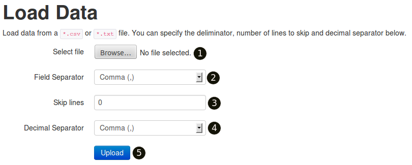
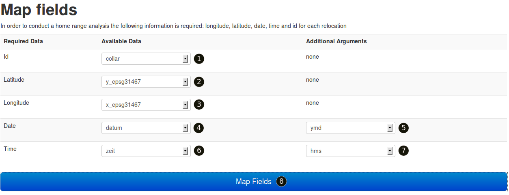
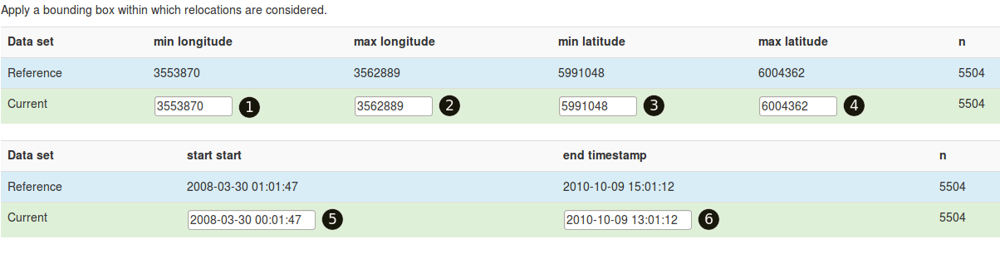
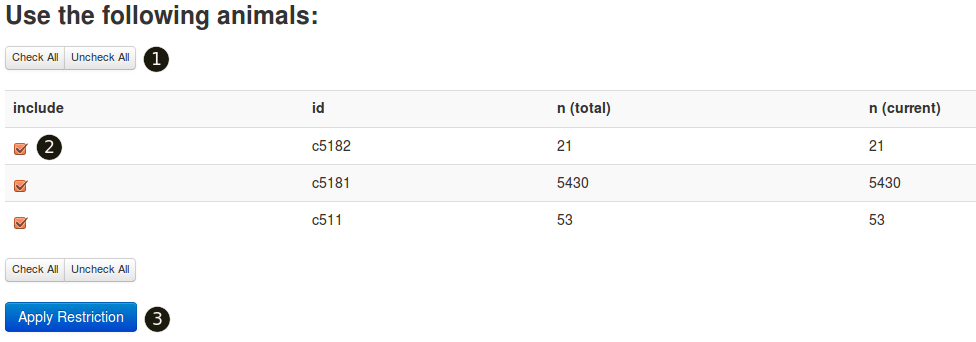
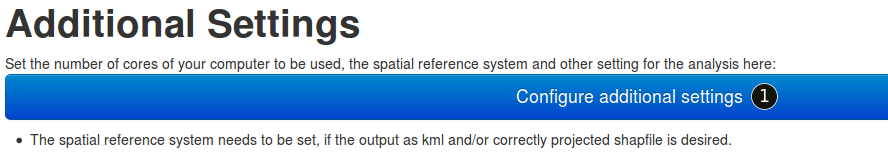
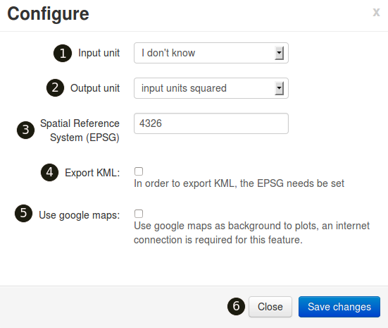
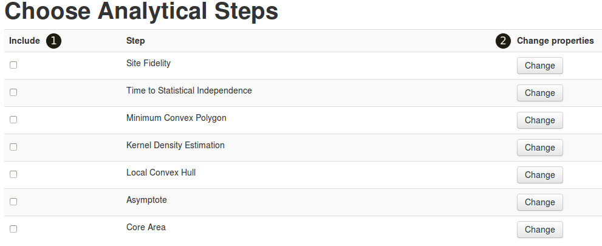

rhr: a R package for reproducible home range analysis
Table of Contents
The idea
rhr is an R package to explore data from animal telemetry studies and to conduct home range analysis. The implemented methods are based on a rigorous review of home range analysis conducted by Laver and Kelly 2008.
The first r in the packages names stands for reproducible. By this we mean, that the package produces a report showing the main findings of analytical steps and parameter values used. Additionally the rhr package provides a GUI (Graphical User Interface) through which all analytical steps can be called. The GUI is built in html and runs R in the background. This feature is intended to ease the use of home range analyses for users with less command line experience.
Getting started
Installation
Currently the package is hosted on r-forge and can be installed from there. However, since there have been some down times of r-forge, I set up a second repository for the rhr package.
I am not able to provide a binary distribution of the package for MAC, because I have no access to a machine with the macosx. The only way to run the package on a Mac at the moment is to compile it from source.
Installing the package from r-forge:
install.packages("rhr", repos=c("http://R-Forge.R-project.org", "http://cran.rstudio.com/"))
Alternative repository:
At the moment it is recommended to install the package from an alternative repository. This can be done as shown below:
install.packages("rhr", repos=c("http://78.47.85.98/R", "http://cran.rstudio.com/"))
A first analysis:
Starting the Graphical User Interface
Once the package is successfully installed, it can be started with:
library(rhr)
rhrGUI()
Loading data
Data can be loaded from any deliminator separated file (shown in Figure fig:load) or read from R.

Press (1) to select a file from your hard drive. Use the drop-down menu (shown in (2)) to select a field separator. This is the character that deliminates different columns in your data file. The data file needs to have a heading. If there is additional Information at the beginning of the data file, this lines can be skipped. Select the number of lines to skipped in (3). Finally, if you have decimal numbers in your coordinates then it is important that the right decimal separator is used. Select either point or comma in (4). Once all selections are made or default values are suitable, click (5) to upload the data.
If loading was successful the header and the first 10 lines of the data set are shown. This allows further inspection of the data set and making sure that the deliminator was chosen and recognized correctly.
In case data is directly read from R, one argument needs to be passed to the function rhrGUI(). The argument dat should be a data.frame containing all necessary data in different columns. Starting the GUI then becomes:
library(rhr)
data(datSH)
rhrGUI(datSH)
Mapping fields
Regardless of the way how the data was read, in the next step it is necessary to provide the information which column contains which information. The minimal information required is: longitude and latitude. If information of several animals is contained in the file and home ranges should be calculated individually, then it is necessary to provide an id column (e.g., collar number or animal name). Finally to calculate time to statistical independence a column for date and one for time when each fix was recorded is required.

Asinging columns. As a bare minimum longitude and latitude ((2) and (3)) are required. For date the order of y(ear), m(onth) and d(ay) needs to be specified correctly in (5).
Spatial, temporal subset and selecting animals
It is possible to subset the data set by space and/or time. Such a subset is applied to all animals in the same manner. At the moment the new coordinates and time window need to be typed manually.

Spatial and temporal subset
When there are several animals are present, it is possible to conduct a choose for which animals analyses will be performed.

Use (1) to check or uncheck all animals at once. Animals can also be selected individually (2).
Once all adjustments are made, pressing the button Apply Restriction (shown in Figure fig:chooseanimals) will apply selections to the dataset.
Configuration
Proceeding in the analysis, the user has the option to set some analysis wide configurations such as:

Pressing (1) will open a dialog box where additional settings can be set.
- Input units
- The input units are the units of the coordinate system. In most cases they are meters, but different options are available. In the case that input units are unknown, most analytical steps will work fine, but interpretation of results can be challenging. N.B. when working with geographical coordinates (i.e., degrees) the output units will be degree squared.
- Output units
- The desired output units for areas (e.g., ha or km2). This requires that the input units are set correctly.
- Spatial Reference System (SRS)
- It is recommended to set the Spatial Reference System through its EPSG code. A list of EPSG codes can be found here: link to codes. In cases where the data are in a reference system not recognized by the EPSG, simply but NA instead.
- Use GE
- This option will automatically download satelite imagery from google earth and use it as a background for plots. This options requires:
- A working internet connection.
- A correct and recognized SRS.
- Accepting google's terms and conditions for using their imagery.
- Export KML
- Checking this option will export home ranges also as
*.kmlfiles. This option requires a correct and recognized SRS.

Pressing (1) will open a dialog box where additional settings can be set.
Selecting analytical steps
Finally analytical steps to be performed need to be selected (see Figure below).

Select steps
Misc
Further help
Mailing list
There is a mailing: rhr-discussion.
Bugs, wishes, etc
Pleas feel free to email me at: jmsigner+at+gmail+dot+com
Q & A
General
- Why is the package not available through CRAN
- We are still developing the package and we are still expecting some changes in the documentation, additional functions and bugs. Release to CRAN will happen some time in the future.